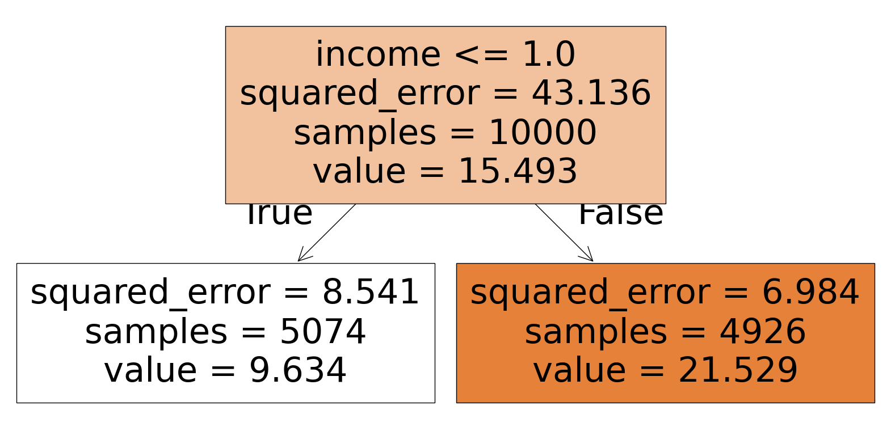
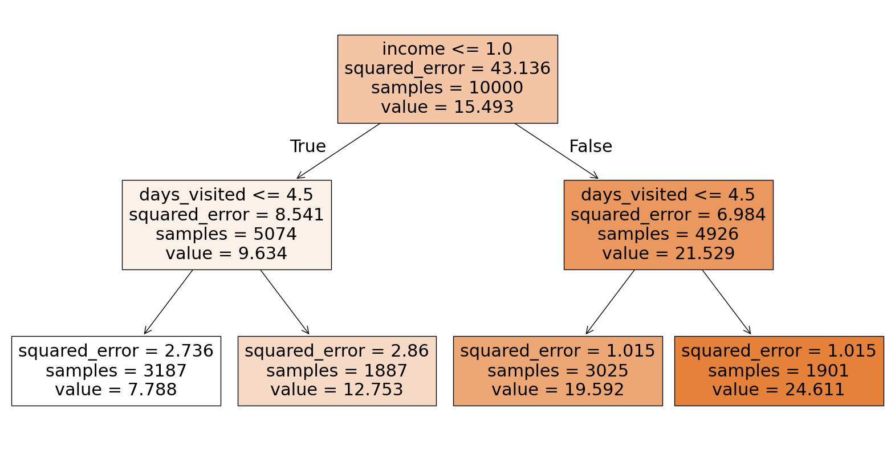
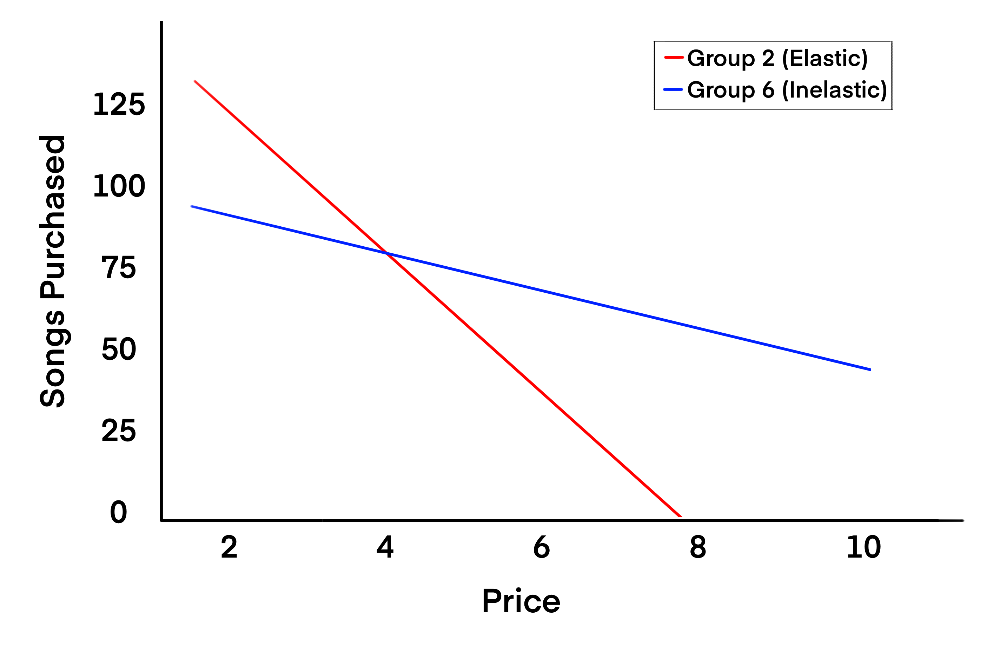

| index | account_age | age | avg_hours | days_visited | friends_count | has_membership | is_us | songs_purchased | income | price | demand | log_price | log_q | leaf | own_price_reg |
|---|---|---|---|---|---|---|---|---|---|---|---|---|---|---|---|
| 0 | 3.01726 | 38.9238 | 5.07327 | 1.94948 | 10.0314 | 0.49294 | 0.800439 | 5.10132 | 0.697376 | 0.867587 | 7.78766 | -0.145771 | 2.02731 | 2 | -2.14204 |
| 1 | 2.97933 | 39.4955 | 5.05556 | 5.99788 | 9.97509 | 0.514043 | 0.786963 | 4.98314 | 0.702922 | 0.869104 | 12.753 | -0.144278 | 2.53648 | 3 | -1.27903 |
| 2 | 2.99316 | 38.5003 | 4.97012 | 6.00526 | 10.07 | 0.50868 | 0.793793 | 5.14311 | 1.5587 | 0.958127 | 24.6107 | -0.0454373 | 3.20234 | 6 | -0.112743 |
| 3 | 3.01388 | 38.797 | 4.93473 | 2.01388 | 10.0212 | 0.488926 | 0.807273 | 4.9841 | 1.57671 | 0.958446 | 19.592 | -0.0450707 | 2.9738 | 5 | -0.1203 |
In the world of data science, one of the most powerful tools for understanding customer behavior and improving marketing strategies is market segmentation. By dividing a market into subgroups with shared characteristics, companies can optimize pricing, enhance customer satisfaction, and allocate resources effectively. In this post, we explore how to use regression trees in Python for market segmentation, providing a step-by-step guide for practical application.
What is Market Segmentation?

Market/Customer segmentation a important tool for identifying “who” your target audience is, serving as a key component of your business model. It divides a market into distinct customer groups with similar needs, interests, and priorities, allowing businesses to tailor marketing efforts and products. This process enhances resource allocation and customer satisfaction. For example, a retailer might segment by geography, income, or behavior.
For this exercise, we’ll use user behavior and characteristics (avgerage hours, days visisted, income, etc..) to predict demand elasticities with a regression tree model.
Customer segmentation in a business model offers several advantages:
1. Effective Marketing Strategy
Segmentation deepens understanding of customers, allowing businesses to prioritize marketing channels and target specific customer groups with tailored messages and creatives.
2. Predicting Customer Behavior
By classifying customers based on behavior, segmentation helps predict future actions, enabling more proactive strategies.
3. Personalized Customer Experience
Segmentation allows businesses to offer services tailored to individual customer needs based on their data and create targeted programs, content, and incentives to reward customers and maintain their satisfaction and engagement.
4. Improved Conversion Metrics
Segmentation boosts conversion rates by enabling personalized strategies. It also helps identify abandoned carts and encourages checkout or purchase.
Key Concepts to Understand
1. Regression Trees
A machine learning tool that predicts continuous outcomes by splitting data based on input features.
2. CP Value
Complexity Parameter decides how deep the decision tree will be grown into. If any split does not increase the overall R2 of the model by at least cp, the tree does not split said branch any further
Sample Dataset
The dataset is from (Keith Battocchi 2019) developed by, Alice Project.
There are around 10,000 observations and 9 continuous and categorical variables representing user’s behaviors and characteristics.
Description of varaibales are as following:
| Feature Name | Details |
|---|---|
| account_age | user’s account age |
| age | user’s age |
| avg_hours | the average hours user was online per week in the past |
| days_visited | the average number of days user visited the website per week |
| friend_count | number of friends of user’s account |
| has_membership | whether the user had membership |
| is_US | whether the user accesses the website from the United States |
| songs_purchased | the average songs user purchased per week (non-discount season) |
| income | user’s income |
| price | the price user was exposed to during the discount season (baseline price * small discount) |
| demand | songs user purchased during the discount season |
Step-by-Step Guide
Step 1: Loading and Preparing the Data
First, we load the libraries and data, and perform some basic data cleaning.
import pandas as pd
import numpy as np
import statsmodels.api as sm
import statsmodels.formula.api as smf
from sklearn.tree import DecisionTreeRegressor
import matplotlib.pyplot as plt
from sklearn.tree import plot_tree
from sklearn.linear_model import LinearRegression
from sklearn import tree
og_df = pd.read_csv("https://msalicedatapublic.z5.web.core.windows.net/datasets/Pricing/pricing_sample.csv")
og_df.columns = og_df.columns.str.replace(' ', '_').str.lower() # Clean column namesStep 2: Choose number of segments
In this step, we use a regression tree to identify how many segments (or clusters) we want. The tree’s complexity is controlled by a hyperparameter (ccp_alpha), which we adjust to visualize the tree structure at different levels of complexity.
def show_tree(cp_val, data):
reg_tree = DecisionTreeRegressor(ccp_alpha=cp_val)
reg_tree.fit(data.drop(columns='demand'), data['demand'])
plt.figure(figsize=(20,10))
tree.plot_tree(reg_tree, filled=True, feature_names=data.drop(columns='demand').columns)
plt.show()
pricing_df = og_df.copy()
# exclude variable of intersts for segmentation
reg_tree_data = pricing_df.drop(columns=['price'])show_tree(5, reg_tree_data)
show_tree(1, reg_tree_data)
We want 4 segments, so we will proceed with cp value of 1.
Step 3: Building the Regression Tree
In this step, we build the actual regression tree model, training it on the user characteristics to predict the demand.
cp_val = 1
reg_tree = DecisionTreeRegressor(ccp_alpha=cp_val)
reg_tree.fit(reg_tree_data.drop(columns='demand'), reg_tree_data['demand'])By fitting the model, we are able to identify the relationships between the various user characteristics and demand, and the tree automatically creates splits (segments) based on these variables.
Step 4: Assigning Users to Leaves
Next, we assign each user to a regression tree leaf:
pricing_df['leaf'] = reg_tree.apply(reg_tree_data.drop(columns='demand'))This step adds a new variable leaf to the dataset, which indicates the leaf (or segment) that each user belongs to.
Step 5: Interpreting the Results
At this point, we have successfully segmented the users based on their characteristics. Each user is now assigned to a segment (leaf) that represents a group of users with similar characteristics.
To calculate price elasticities for each segment, do the following:
pricing_df['log_price'] = np.log(pricing_df['price'])
pricing_df['log_q'] = np.log(pricing_df['demand'])
data = []
# Elasticity function
def own_price_reg(leaf_num):
df = pricing_df[pricing_df['leaf'] == leaf_num]
model = smf.ols('log_q ~ log_price', data=df).fit()
return model.params['log_price']
for leaf in pricing_df['leaf'].unique():
own_price = own_price_reg(leaf)
leaf_data = pricing_df[pricing_df['leaf'] == leaf]
avg_values = leaf_data.drop(columns=['leaf']).mean().to_dict()
# Add the result to the data list
avg_values['leaf'] = leaf
avg_values['own_price_reg'] = own_price
data.append(avg_values)
pd.DataFrame(data)Both price and demand are transformed by log. This allows the coefficients to represent elasticity (the percentage change in demand for a percentage change in price).
Group 2:
- Price Elasticity (-2.14): Highly elastic. The demand is sensitive to price changes. A small price increase could significantly reduce demand.
- Average Income (0.70): Relatively low compared to other groups, suggesting higher price sensitivity (income effect).
- Average Days Visited (1.95): Low platform engagement, possibly contributing to higher elasticity as these users might not be habitual buyers.
- Interpretation: Price adjustments could significantly impact demand in this group, making them ideal for sale offerings.
Group 3:
- Price Elasticity (-1.28): Moderately elastic. Users are still responsive to price changes, but less so than Group 0.
- Average Income (0.70): Similar to Group 2. Moderate price sensitivity.
- Average Days Visited (5.99): Higher engagement than Group 0, which could reduce elasticity as these users are more invested in the platform.
- Interpretation: This group may respond to price changes, but their higher engagement suggests potential for retention despite price increases.
Group 6:
- Price Elasticity (-0.11): Nearly inelastic. The demand is relatively insensitive to price changes.
- Income (1.56): Higher than the other groups, likely contributing to lower price sensitivity.
- Average Days Visited (6.01): Highest engagement. This could reduce elasticity as these users are more invested in the platform. highly.
- Interpretation: This group can tolerate higher prices without significant reductions in demand, making them ideal for premium offerings.
Group 5:
- Price Elasticity (-0.12): Nearly inelastic. Similar to Group 6.
- Income (1.58): Comparable to Group 6, supporting lower price sensitivity.
- Average Days Visited (2.01): Despite low platform engagement, demand (19.59) remains high, which could mean that users in this group value the product highly.
- Interpretation: Like Group 6, this group is less price-sensitive and may represent another target for premium pricing or tailored offers.
Recommendation:
High Elasticity Groups (2 and 3):
- These groups are more price-sensitive due to lower income, engagement, or both.
- Price reductions or promotions may drive significant demand increases.
Low Elasticity Groups (6 and 5):
- These groups show low sensitivity to price changes, likely due to higher income and inherent demand.
- They are suitable candidates for price increases or premium-tier products.

By understanding these nuances, pricing and marketing strategies can be tailored to maximize revenue while maintaining user satisfaction.
Real-World Applications
Market segmentation using regression trees can be applied to a variety of industries. Here are a few examples:
Retail: Optimize promotions and product offerings based on customer demographics.
Healthcare: Segment patients to tailor treatment plans.
Finance: Offer personalized financial products based on income and behavior.
Conclusion
In this blog post, we demonstrated how to segment a market using regression trees in Python. By using regression trees for segmentation, you can uncover actionable insights to drive strategy and decision-making. Whether refining pricing strategies or identifying customer needs, these tools offer a robust way to make the most of your data.
If you’re interested in diving deeper into regression trees or market segmentation, try applying these techniques to your own datasets and explore how different groups behave differently in your industry.
References
Keith Battocchi, Maggie Hei, Eleanor Dillon. 2019. “EconML: A Python Package for ML-Based Heterogeneous Treatment Effects Estimation.” https://github.com/py-why/EconML.
Takyar, Akash. 2024. “How to Build a Machine Learning Model for Customer Segmentation?” LeewayHertz. https://www.leewayhertz.com/build-a-machine-learning-model-for-customer-segmentation/#How-to-build-a-machine-learning-model-for-customer-segmentation.